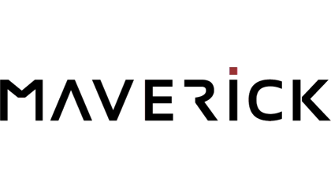

求人・広告
Job Offer & Advertising
株式会社Tech to Value
「Scalaスペシャリスト、育てます」
(株)Tech to Value では Scala Onlineコードレビューをサービスとして行っています。
GitHubやそれに類するサービスにてPull Requestベースによるコードレビュー、ならびにSlackやChatworkといったチャットサービスによるFAQを通じ、チームに実践的なScalaの使い方を広げていきます。
Scalaの導入を検討しているが、チームに詳しい人間が居ないため二の足を踏んでいる企業がありましたら、ぜひ導入をご検討ください。
製品情報ページ
株式会社ビズリーチ
《scalaエンジニア》HR×Techで新たなインパクトを！
当社は「インターネットの力で、世の中の選択肢と可能性を広げていく」のミッションのもと、様々なインターネットサービスを企画・運営しております。
- 日本最大級の求人検索エンジン「スタンバイ」
- クラウド型の採用管理システム「HRMOS（ハーモス）」
- さらなる高みを目指すビジネスパーソンのための教室「BIZREACH ACADEMY」
- 友達とクイズで競える学習アプリ「zuknow（ズノウ）」
- 20代のためのレコメンド型転職サイト「careertrek（キャリアトレック）」
- 管理職・グローバル人材の転職サイト「ビズリーチ」 など
新規事業 HRMOS（ハーモス）の開発チームに参画し、プロダクト開発を牽引していただける方を募集します。「HRMOS」は採用管理を始め企業のバックオフィスを支えるモジュール群から構成され、Scalaを使用して開発しています。
Scalaを使って開発したい、技術に拘り続けたい方、フロントやアプリ、AWSなどに興味がありスキルの幅を広げたい方。企画・設計に始めから関わりたい、ユーザーの声を直接聞きたい方。「働き方」を変えていくことで世の中に良い影響を与えることに興味が持てる方。デザイナー、サービス企画、マーケティング担当、営業など、部署を越えて協力しながら新サービスの開発に取り組んでいきましょう！
採用情報ページ
マーベリック株式会社
Scalaで一緒に「新しい普通」をつくりませんか?

マーベリック株式会社では "新しい"が"普通"になる。 をコンセプトに世界にインパクトを与えるScala製オリジナルプロダクトを続々と開発しています。
世の中を見渡せば、新しいサービス・ライブラリ・フレームワークは無数に存在します。
そして、その中からScalaのようにStandardになるものは、ほんのごくわずかです。
しかし、マーベリックはそんな新しいStandardの創造に本気で取り組んでいます。
マーベリックでは全てのプロダクトのサーバーサイドアプリケーションをScalaで実装しています。
Web広告システムとして近年有名なRTB(Real Time Bidding) DSP(Demand Side Platform)「Sphere」はもちろん、リリースしたばかりのスマートフォン向けインフィード広告「Sphere Infeed」も、オフラインターゲティング広告「Sphere Paper」も、社内向けのポータルサイトさえ、サーバーサイド実装は全てScalaで行っています。
開発スタイルはGitHubとSlackでのコミュニケーションを中心としたアジャイル開発で、Play 2やFinagle, ScalikeJDBCをはじめとした様々なモダンなフレームワークを武器として、月間数百億の膨大なリクエストと100ms未満のシビアなレイテンシに立ち向かっています。
この進化著しいソフトウェアの世界を、Scala x GitHub x Slack x お好きなエディタ／IDEで一緒に戦いましょう!
採用情報ページエムオーテックス株式会社
あなた：「次のプロジェクトはScalaで挑戦してみたいのですが…」
上司 ：「そんな訳のわからない言語はダメです！」
というやり取りを経験したことのあるそこのあなた！
私たちと一緒に、ScalaでPlay2でDDDなプロダクトを一緒に作りませんか？
私たちは、日本でトップシェアを得ているプロダクトを携え、これから世界に打って出ます。
開発効率、品質アップのために選択した開発環境はScala、そしてPlay2 Framework。
ユーザーの本当の課題を解決し、プロダクトが進化し続けるためのの手法として選択したのはDDD。
あなたの実力を存分に活かす為の環境を用意しています。
是非、世界に打って出る製品を一緒に作りましょう！ご応募お待ちしております！
株式会社グラッドキューブ
当社では「喜びをカタチにする」という理念を掲げ、Webプロモ−ション事業と同時にWebシステムの開発も行っております。既に公開しておりますWebサイト解析・改善サービスであります「 SiTest (サイテスト)」の開発、運用を100%自社開発で行っており、既に10万サイト以上に導入していただいております。
SiTest はフロントエンドに力を入れたシステムになっており、システムのほとんどが関数型altJSであります「LiveScript」で書かれています。Scalaの実績はまだありませんが、次のサービスではScalaの採用を予定しており、社内でもScalaでの開発気運が高まりつつあります。
エンジニアの人数が9名とまだまだ少ないですが、そのぶん一人ひとりの意見や希望する技術をプロダクトに即反映することが出来ます(昨年ではDocker採用、Plymer導入など)。
大阪でScalaを使った開発がしたい！最新のWEB技術を駆使した開発がしたい！フロントエンドのスキルも磨きたい！とにかく面白いことがしたい！という方、サービスの立ち上げから携われるチャンスです。是非ご応募ください！

TIS株式会社
Lightbendの認定コンサルティングパートナーであるTISはAkka、Play Framework、Scalaを利用したアプリケーションの構築をサポートします。お客様の開発フェーズや目的に応じて、POC支援からシステム構築のトータルサポートまで幅広くご支援致します。
・技術検証・POC支援
・アーキテクチャ・設計レビュー
・コードレビュー
・システム構築のトータルサポート
スケーラブルなアプリケーションや障害に強いシステムの構築でお悩みの方は製品情報ページからご連絡下さい。
株式会社はてな
はてなは「『知る』『つながる』『表現する』で新しい体験を提供し、人の生活を豊かにする」をミッションに、「はてなブックマーク」「はてなブログ」などのソーシャルサービスを展開しています。最近はサーバー監視ツール「Mackerel」などビジネス向けの製品もリリースし、アクティブに開発中です。
京都と東京の二拠点体制に加え、自宅でリモート勤務をしているエンジニアもおり、GitHub Enterprise や Slack を利用しアジャイルなチーム開発を行っています。
Mackerel が Scala と Go で書かれているほか、最近でははてなブックマークのリニューアルに Scala を採用しています。イベントや技術ブログでも、Scala に関する取り組みを発信しています（はてなブックマーク in Scala、Mackerel における Scala/Play）。
Scala を使って人の生活を豊かにしたいあなた、是非ご応募ください！ 勤務地は京都と東京の両方を選択できます。詳しくは採用ページや開発者ブログをご覧ください。
株式会社リンコード
どこにもないシステムをScalaで
当社は現在、音声認識システムと学校向けパッケージの開発をメインに行っています。
特に音声認識システムの開発では、多くの端末から送信される音声データを
非同期並列に、かつ高速で処理することが求められます。
このようなシステムは、既存のフレームワークでは実現が困難なため、
Scalaを用いて、Akkaなどのライブラリを組み合わせて最適なシステムを模索しながら開発設計しています。
当社では、このような"どこにもないシステム"開発に本気で取り組んでみたい
エンジニアの採用を積極的に行っています。
また、自社サービスやプロダクトの社内提案を奨励しています。
Scalaで"どこにもないシステム"を開発していみたいという希望を持っている方を探しています。
当社に少しでも興味を持った方は、採用情報ページをご参照ください。
フリュー株式会社
フリューは1997年の創業以来、プリントシール機事業に始まり、コンテンツ・メディア事業、キャラクター・マーチャンダイジング事業、ゲーム事業、アニメ事業と、様々なエンタテインメント事業領域に参入し、その範囲を着実に広げて参りました。
コンテンツ・メディア事業／ソーシャルゲーム事業においては2012年からScalaを実案件にて採用し、4年以上にわたりScalaの技術を蓄積・研鑽してきました。
社内にはScalaやJavaに精通した技術者が多く在席。開発チームは自発的に新しい技術を検証し、その内容を技術ブログで公開したり、社外のセミナー・勉強会にて発表したりしています。
京都でScalaやJavaを使ったお仕事がしてみたい方！
ぜひ一緒に人々のこころを豊かで幸せにする良質なエンタテインメントを創出していきましょう！
株式会社ヌーラボ
株式会社ヌーラボは「チームで働くすべての人に」をコンセプトに、仕事を楽しく、コラボレーションを促進するサービスを開発しています。プロジェクト管理の「Backlog」、図の作成と共有の「Cacoo」、チームディスカッションの「Typetalk」の開発、提供をおこなっています。
TypetalkとBacklogではScalaを採用していて、すでに多くの方の仕事を支えています。Scala福岡という勉強会をサポートしたり、社内でもScalaや関数型プログラミングに関する勉強を実施しており、今後Scalaに力を入れていこうと考えています。また、実際にサービスで利用するために開発したScalaのライブラリをGitHubで OSS として公開も行っています。
本社は福岡ですが、国内には京都、東京にも開発拠点があります。すべての拠点で開発者を募集していますので、Scalaを使った開発に興味がある方やヌーラボのサービスに興味がある方、「仕事の中に楽しさを」のコンセプトに共感する方、ぜひご応募ください。詳しくは採用情報やヌーラボブログの技術カテゴリーを参照してください。
株式会社ネクストビート
当社は『人口減少社会において必要とされるインターネット事業を創造し、ニッポンを元気にする』を大きなミッションとし、現在は子育て支援領域において様々なインターネット事業を開発・運営しております。
Scalaを用いPlayFrameworkとSlickを基盤に構築されたサービス『KIDSNA（キズナ）』のシステム設計および実装を担当していただけるエンジニアを募集しています。
KIDSNAは、保育園事業支援ASPサービス、保護者が利用するiOS & Android 向けのモバイルサービスの大きく2つの側面の機能を持ち、連携する保育園と保護者とのコミュニケーションを快適に行うユーザーインターフェースを提供していきます。ユーザー体験を第一に据えたプロダクト開発によって高い評価をいただいています。
当社のエンジニアは単なる開発者ではなく、マーケティングチームと協力しながら、企画・開発・運営・効果分析まで携わり、メンバーで思い描いたサービスを、スピード感をもって実現していきます。日々刺激的な環境下で、速いスピート感で活躍することが出来ます！
株式会社オプト
株式会社オプトは持続的な成長を志す企業に対してマーケティング×テクノロジーのパートナーとなる「eマーケティングカンパニー」です。
インターネット広告代理店ですが、ScalaやRubyを使ったアドテクノロジー製品の開発も行っています。
Scalaでは具体的にはこんなの作ってます。
- 大規模広告効果測定システム
- ダイナミックバナーシステム
- データフィード管理システム
今年は "Opt Technologies" というエンジニア組織を立ち上げ、より技術を強化していくフェーズです。技術的には Scala のほか、 Apache Spark や React.js の利用が進みました。
開発拠点は東京と仙台にあります。（大阪支社あるけど開発してなくてごめんなさい＞＜）
Scalaで開発してみたい方（Scala実務経験不問）、FPでモナモナしてみたい方、モダンなフロントエンド開発してみたい方（Scala関係ない）のご応募をお待ちしております！
会場でお会いできましたら、是非いろいろお話しましょう！ お好み食べたい！